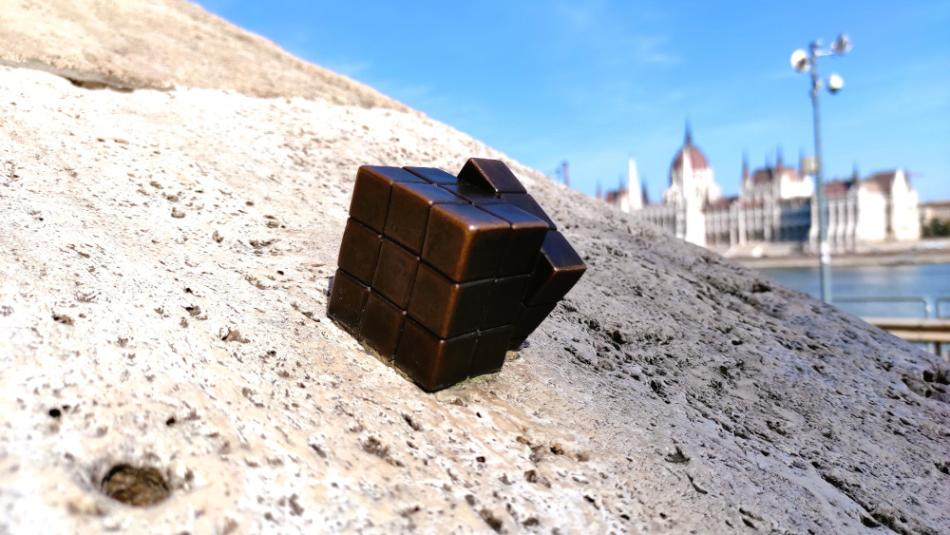

Rubik Kocka



Kolodko Mihály miniszobrai az elmúlt években a városi tér rejtett, mégis jelentésgazdag elemeivé váltak. Ezek az apró alkotások nem hivalkodnak, hanem felfedezésre hívnak, és személyes kapcsolatot alakítanak ki a járókelővel. Közülük is kiemelkedik a Rubik-kockát ábrázoló miniszobor, amely a magyar találékonyság és a 20. századi kultúra egyik ikonja előtt tiszteleg. A Rubik-kocka Rubik Ernő nevéhez kötődik, és világszerte a kreatív gondolkodás, a logika és a türelem szimbólumává vált. Kolodko ezt a közismert tárgyat emeli be a városi térbe, miközben megőrzi művészetének játékos és ironikus jellegét. A szobor nem monumentális emlékmű, hanem apró meglepetés, amely véletlenszerű találkozás révén válik emlékezetessé. A mű egyszerre reflektál a magyar identitásra és a kortárs városi létre. A Rubik-kocka mint nemzeti találmány büszkeséget hordoz, ugyanakkor Kolodko értelmezésében elveszíti pátoszát, és emberléptékűvé válik. A bronz anyag időtállósága kontrasztban áll az eredeti játék műanyag jellegével, mégis felerősíti az üzenetet: a kreativitás és a problémamegoldás a mindennapok része. Összességében a Kolodko-féle Rubik-kocka gondolati játékként működik, amely arra emlékeztet, hogy a világ – akárcsak egy kirakós – kuszának tűnhet, mégis rendet és megoldást rejt.